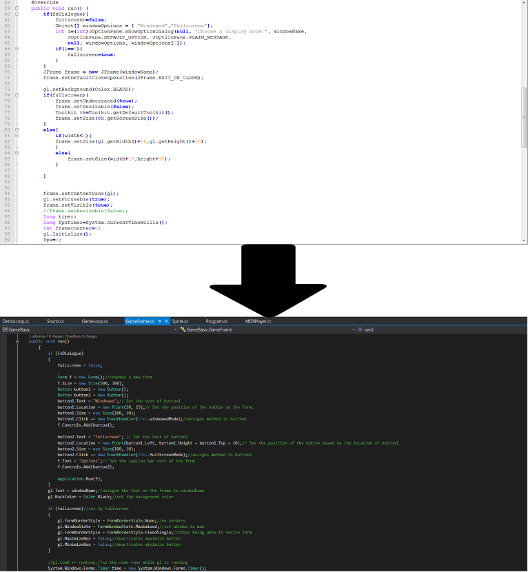
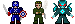

Personal Projects:
Game Basic
Game Basic Library
This library was originally created by Peter Cowal in Java. I have decided to convert it to C#. It is a libray that allows for easier creation of games using forms and percise manipulations of the pixels in the game or simulations.
I decided to recreate the Java version in C# because back in high school it was really helpful for me making games in Java. I've been learning the differences and similarities between Java and C#. I have also been learning different small pieces of code that can help me if I ever make another library in C# or another langauge.

Personal Projects:
The Abomination Project

The Abomination Project
This project is was originally created by a high school friend named Peter Cowal and me. It was orignally coded in Java and currently am in the process of converting it to c#. It implements the GameBasic Library.
Originally, this game was made at a 24 hour hachaton by Peter and me. After the hackathon, I decided to take it upon myself and add more to it. I implemented things like version history, more items, more enemies, added more to the main menu, and I modified the dungeon generator.
The I primarily liked about it was that it was really my first game that I felt very passionate about continuing after others stopped working on it. That is why I am moving it over to C# so I can continue working on it in my spare time. 